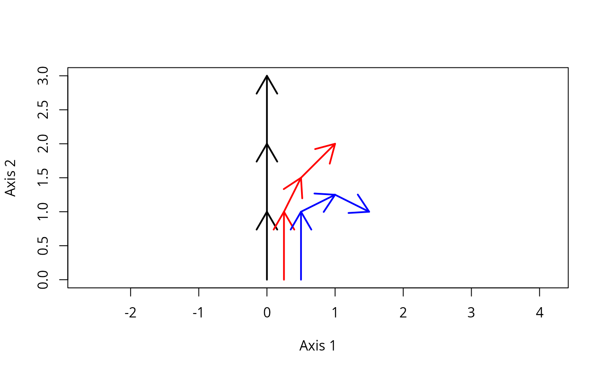

Functions to compare pairs of trajectories or trajectory segments.
Function
segmentDistancescalculates the distance between pairs of trajectory segments.Function
trajectoryDistancescalculates the distance between pairs of trajectories.Function
trajectoryConvergenceperforms the Mann-Kendall trend test on the distances between trajectories (symmetric test) or the distance between points of one trajectory to the other.
Usage
segmentDistances(x, distance.type = "directed-segment", add = TRUE)
trajectoryDistances(
x,
distance.type = "DSPD",
symmetrization = "mean",
add = TRUE
)
trajectoryConvergence(x, symmetric = FALSE, add = TRUE)Arguments
- x
An object of class
trajectories.- distance.type
The type of distance index to be calculated (see section Details).
- add
Flag to indicate that constant values should be added (local transformation) to correct triplets of distance values that do not fulfill the triangle inequality.
- symmetrization
Function used to obtain a symmetric distance, so that DSPD(T1,T2) = DSPD(T2,T1) (e.g.,
meanormin). Ifsymmetrization = NULLthen the symmetrization is not conducted and the output dissimilarity matrix is not symmetric.- symmetric
A logical flag to indicate a symmetric convergence comparison of trajectories.
Value
Function trajectoryDistances returns an object of class dist containing the distances between trajectories (if symmetrization = NULL then the object returned is of class matrix).
Function segmentDistances list with the following elements:
Dseg: Distance matrix between segments.Dini: Distance matrix between initial points of segments.Dfin: Distance matrix between final points of segments.Dinifin: Distance matrix between initial points of one segment and the final point of the other.Dfinini: Distance matrix between final points of one segment and the initial point of the other.
Function trajectoryConvergence returns a list with two elements:
tau: A matrix with the statistic (Mann-Kendall's tau) of the convergence/divergence test between trajectories. Ifsymmetric=TRUEthen the matrix is square. Otherwise the statistic of the test of the row trajectory approaching the column trajectory.p.value: A matrix with the p-value of the convergence/divergence test between trajectories. Ifsymmetric=TRUEthen the matrix is square. Otherwise the p-value indicates the test of the row trajectory approaching the column trajectory.
Details
Ecological Trajectory Analysis (ETA) is a framework to analyze dynamics of ecosystems described as trajectories in a chosen space of multivariate resemblance (De Cáceres et al. 2019). ETA takes trajectories as objects to be analyzed and compared geometrically.
The input distance matrix d should ideally be metric. That is, all subsets of distance triplets should fulfill the triangle inequality (see utility function is.metric).
All ETA functions that require metricity include a parameter 'add', which by default is TRUE, meaning that whenever the triangle inequality is broken the minimum constant required to fulfill it is added to the three distances.
If such local (an hence, inconsistent across triplets) corrections are not desired, users should find another way modify d to achieve metricity, such as PCoA, metric MDS or non-metric MDS (see vignette 'Introduction to Ecological Trajectory Analysis').
If parameter 'add' is set to FALSE and problems of triangle inequality exist, ETA functions may provide missing values in some cases where they should not.
The resemblance between trajectories is done by adapting concepts and procedures used for the analysis of trajectories in space (i.e. movement data) (Besse et al. 2016).
Parameter distance.type is the type of distance index to be calculated which for function segmentDistances has the following options (Besse et al. 2016, De Cáceres et al. 2019:
Hausdorff: Hausdorff distance between two segments.directed-segment: Directed segment distance (default).PPA: Perpendicular-parallel-angle distance.
In the case of function trajectoryDistances the following values are possible (De Cáceres et al. 2019):
Hausdorff: Hausdorff distance between two trajectories.SPD: Segment path distance.DSPD: Directed segment path distance (default).
References
Besse, P., Guillouet, B., Loubes, J.-M. & François, R. (2016). Review and perspective for distance based trajectory clustering. IEEE Trans. Intell. Transp. Syst., 17, 3306–3317.
De Cáceres M, Coll L, Legendre P, Allen RB, Wiser SK, Fortin MJ, Condit R & Hubbell S. (2019). Trajectory analysis in community ecology. Ecological Monographs 89, e01350.
Examples
#Description of sites and surveys
sites <- c("1","1","1","1","2","2","2","2","3","3","3","3")
surveys <- c(1,2,3,4,1,2,3,4,1,2,3,4)
#Raw data table
xy<-matrix(0, nrow=12, ncol=2)
xy[2,2]<-1
xy[3,2]<-2
xy[4,2]<-3
xy[5:6,2] <- xy[1:2,2]
xy[7,2]<-1.5
xy[8,2]<-2.0
xy[5:6,1] <- 0.25
xy[7,1]<-0.5
xy[8,1]<-1.0
xy[9:10,1] <- xy[5:6,1]+0.25
xy[11,1] <- 1.0
xy[12,1] <-1.5
xy[9:10,2] <- xy[5:6,2]
xy[11:12,2]<-c(1.25,1.0)
#Draw trajectories
trajectoryPlot(xy, sites, surveys,
traj.colors = c("black","red", "blue"), lwd = 2)

#Distance matrix
d <- dist(xy)
d
#> 1 2 3 4 5 6 7
#> 2 1.0000000
#> 3 2.0000000 1.0000000
#> 4 3.0000000 2.0000000 1.0000000
#> 5 0.2500000 1.0307764 2.0155644 3.0103986
#> 6 1.0307764 0.2500000 1.0307764 2.0155644 1.0000000
#> 7 1.5811388 0.7071068 0.7071068 1.5811388 1.5206906 0.5590170
#> 8 2.2360680 1.4142136 1.0000000 1.4142136 2.1360009 1.2500000 0.7071068
#> 9 0.5000000 1.1180340 2.0615528 3.0413813 0.2500000 1.0307764 1.5000000
#> 10 1.1180340 0.5000000 1.1180340 2.0615528 1.0307764 0.2500000 0.5000000
#> 11 1.6007811 1.0307764 1.2500000 2.0155644 1.4577380 0.7905694 0.5590170
#> 12 1.8027756 1.5000000 1.8027756 2.5000000 1.6007811 1.2500000 1.1180340
#> 8 9 10 11
#> 2
#> 3
#> 4
#> 5
#> 6
#> 7
#> 8
#> 9 2.0615528
#> 10 1.1180340 1.0000000
#> 11 0.7500000 1.3462912 0.5590170
#> 12 1.1180340 1.4142136 1.0000000 0.5590170
#Trajectory data
x <- defineTrajectories(d, sites, surveys)
#Distances between trajectory segments
segmentDistances(x, distance.type = "Hausdorff")
#> $Dseg
#> 1[1-2] 1[2-3] 1[3-4] 2[1-2] 2[2-3] 2[3-4] 3[1-2]
#> 1[2-3] 1.0000000
#> 1[3-4] 2.0000000 1.0000000
#> 2[1-2] 0.2500000 1.0307764 2.0155644
#> 2[2-3] 1.0307764 0.7071068 1.5811388 1.0000000
#> 2[3-4] 1.5811388 1.0000000 1.4142136 1.5206906 0.7071068
#> 3[1-2] 0.5000000 1.1180340 2.0615528 0.2500000 1.0307764 1.5000000
#> 3[2-3] 1.1180340 1.1180340 2.0124612 1.0307764 0.5590170 0.7500000 1.0000000
#> 3[3-4] 1.6007811 1.5000000 2.0155644 1.4577380 1.1180340 1.0606602 1.3416408
#> 3[2-3]
#> 1[2-3]
#> 1[3-4]
#> 2[1-2]
#> 2[2-3]
#> 2[3-4]
#> 3[1-2]
#> 3[2-3]
#> 3[3-4] 0.5590170
#>
#> $Dini
#> 1[1-2] 1[2-3] 1[3-4] 2[1-2] 2[2-3] 2[3-4] 3[1-2]
#> 1[2-3] 1.0000000
#> 1[3-4] 2.0000000 1.0000000
#> 2[1-2] 0.2500000 1.0307764 2.0155644
#> 2[2-3] 1.0307764 0.2500000 1.0307764 1.0000000
#> 2[3-4] 1.5811388 0.7071068 0.7071068 1.5206906 0.5590170
#> 3[1-2] 0.5000000 1.1180340 2.0615528 0.2500000 1.0307764 1.5000000
#> 3[2-3] 1.1180340 0.5000000 1.1180340 1.0307764 0.2500000 0.5000000 1.0000000
#> 3[3-4] 1.6007811 1.0307764 1.2500000 1.4577380 0.7905694 0.5590170 1.3462912
#> 3[2-3]
#> 1[2-3]
#> 1[3-4]
#> 2[1-2]
#> 2[2-3]
#> 2[3-4]
#> 3[1-2]
#> 3[2-3]
#> 3[3-4] 0.5590170
#>
#> $Dfin
#> 1[1-2] 1[2-3] 1[3-4] 2[1-2] 2[2-3] 2[3-4] 3[1-2]
#> 1[2-3] 1.0000000
#> 1[3-4] 2.0000000 1.0000000
#> 2[1-2] 0.2500000 1.0307764 2.0155644
#> 2[2-3] 0.7071068 0.7071068 1.5811388 0.5590170
#> 2[3-4] 1.4142136 1.0000000 1.4142136 1.2500000 0.7071068
#> 3[1-2] 0.5000000 1.1180340 2.0615528 0.2500000 0.5000000 1.1180340
#> 3[2-3] 1.0307764 1.2500000 2.0155644 0.7905694 0.5590170 0.7500000 0.5590170
#> 3[3-4] 1.5000000 1.8027756 2.5000000 1.2500000 1.1180340 1.1180340 1.0000000
#> 3[2-3]
#> 1[2-3]
#> 1[3-4]
#> 2[1-2]
#> 2[2-3]
#> 2[3-4]
#> 3[1-2]
#> 3[2-3]
#> 3[3-4] 0.5590170
#>
#> $Dinifin
#> 1[1-2] 1[2-3] 1[3-4] 2[1-2] 2[2-3] 2[3-4] 3[1-2]
#> 1[1-2] 1.0000000 2.0000000 3.000000 1.0307764 1.5811388 2.2360680 1.118034
#> 1[2-3] 0.0000000 1.0000000 2.000000 0.2500000 0.7071068 1.4142136 0.500000
#> 1[3-4] 1.0000000 0.0000000 1.000000 1.0307764 0.7071068 1.0000000 1.118034
#> 2[1-2] 1.0307764 2.0155644 3.010399 1.0000000 1.5206906 2.1360009 1.030776
#> 2[2-3] 0.2500000 1.0307764 2.015564 0.0000000 0.5590170 1.2500000 0.250000
#> 2[3-4] 0.7071068 0.7071068 1.581139 0.5590170 0.0000000 0.7071068 0.500000
#> 3[1-2] 1.1180340 2.0615528 3.041381 1.0307764 1.5000000 2.0615528 1.000000
#> 3[2-3] 0.5000000 1.1180340 2.061553 0.2500000 0.5000000 1.1180340 0.000000
#> 3[3-4] 1.0307764 1.2500000 2.015564 0.7905694 0.5590170 0.7500000 0.559017
#> 3[2-3] 3[3-4]
#> 1[1-2] 1.6007811 1.802776
#> 1[2-3] 1.0307764 1.500000
#> 1[3-4] 1.2500000 1.802776
#> 2[1-2] 1.4577380 1.600781
#> 2[2-3] 0.7905694 1.250000
#> 2[3-4] 0.5590170 1.118034
#> 3[1-2] 1.3462912 1.414214
#> 3[2-3] 0.5590170 1.000000
#> 3[3-4] 0.0000000 0.559017
#>
segmentDistances(x, distance.type = "directed-segment")
#> $Dseg
#> 1[1-2] 1[2-3] 1[3-4] 2[1-2] 2[2-3] 2[3-4] 3[1-2]
#> 1[2-3] 1.0000000
#> 1[3-4] 2.0000000 1.0000000
#> 2[1-2] 0.2500000 1.0307764 2.0155644
#> 2[2-3] 1.0307764 0.7071068 1.5811388 1.0000000
#> 2[3-4] 1.5811388 1.0000000 1.4142136 1.5206906 0.7071068
#> 3[1-2] 0.5000000 1.1180340 2.0615528 0.2500000 1.0307764 1.5000000
#> 3[2-3] 1.1180340 1.1180340 2.0124612 1.0307764 0.5590170 0.7500000 1.0000000
#> 3[3-4] 1.6007811 1.5590170 2.0155644 1.4577380 1.1180340 1.0606602 1.5590170
#> 3[2-3]
#> 1[2-3]
#> 1[3-4]
#> 2[1-2]
#> 2[2-3]
#> 2[3-4]
#> 3[1-2]
#> 3[2-3]
#> 3[3-4] 0.5590170
#>
#> $Dini
#> 1[1-2] 1[2-3] 1[3-4] 2[1-2] 2[2-3] 2[3-4] 3[1-2]
#> 1[2-3] 1.0000000
#> 1[3-4] 2.0000000 1.0000000
#> 2[1-2] 0.2500000 1.0307764 2.0155644
#> 2[2-3] 1.0307764 0.2500000 1.0307764 1.0000000
#> 2[3-4] 1.5811388 0.7071068 0.7071068 1.5206906 0.5590170
#> 3[1-2] 0.5000000 1.1180340 2.0615528 0.2500000 1.0307764 1.5000000
#> 3[2-3] 1.1180340 0.5000000 1.1180340 1.0307764 0.2500000 0.5000000 1.0000000
#> 3[3-4] 1.6007811 1.0307764 1.2500000 1.4577380 0.7905694 0.5590170 1.3462912
#> 3[2-3]
#> 1[2-3]
#> 1[3-4]
#> 2[1-2]
#> 2[2-3]
#> 2[3-4]
#> 3[1-2]
#> 3[2-3]
#> 3[3-4] 0.5590170
#>
#> $Dfin
#> 1[1-2] 1[2-3] 1[3-4] 2[1-2] 2[2-3] 2[3-4] 3[1-2]
#> 1[2-3] 1.0000000
#> 1[3-4] 2.0000000 1.0000000
#> 2[1-2] 0.2500000 1.0307764 2.0155644
#> 2[2-3] 0.7071068 0.7071068 1.5811388 0.5590170
#> 2[3-4] 1.4142136 1.0000000 1.4142136 1.2500000 0.7071068
#> 3[1-2] 0.5000000 1.1180340 2.0615528 0.2500000 0.5000000 1.1180340
#> 3[2-3] 1.0307764 1.2500000 2.0155644 0.7905694 0.5590170 0.7500000 0.5590170
#> 3[3-4] 1.5000000 1.8027756 2.5000000 1.2500000 1.1180340 1.1180340 1.0000000
#> 3[2-3]
#> 1[2-3]
#> 1[3-4]
#> 2[1-2]
#> 2[2-3]
#> 2[3-4]
#> 3[1-2]
#> 3[2-3]
#> 3[3-4] 0.5590170
#>
#> $Dinifin
#> 1[1-2] 1[2-3] 1[3-4] 2[1-2] 2[2-3] 2[3-4] 3[1-2]
#> 1[1-2] 1.0000000 2.0000000 3.000000 1.0307764 1.5811388 2.2360680 1.118034
#> 1[2-3] 0.0000000 1.0000000 2.000000 0.2500000 0.7071068 1.4142136 0.500000
#> 1[3-4] 1.0000000 0.0000000 1.000000 1.0307764 0.7071068 1.0000000 1.118034
#> 2[1-2] 1.0307764 2.0155644 3.010399 1.0000000 1.5206906 2.1360009 1.030776
#> 2[2-3] 0.2500000 1.0307764 2.015564 0.0000000 0.5590170 1.2500000 0.250000
#> 2[3-4] 0.7071068 0.7071068 1.581139 0.5590170 0.0000000 0.7071068 0.500000
#> 3[1-2] 1.1180340 2.0615528 3.041381 1.0307764 1.5000000 2.0615528 1.000000
#> 3[2-3] 0.5000000 1.1180340 2.061553 0.2500000 0.5000000 1.1180340 0.000000
#> 3[3-4] 1.0307764 1.2500000 2.015564 0.7905694 0.5590170 0.7500000 0.559017
#> 3[2-3] 3[3-4]
#> 1[1-2] 1.6007811 1.802776
#> 1[2-3] 1.0307764 1.500000
#> 1[3-4] 1.2500000 1.802776
#> 2[1-2] 1.4577380 1.600781
#> 2[2-3] 0.7905694 1.250000
#> 2[3-4] 0.5590170 1.118034
#> 3[1-2] 1.3462912 1.414214
#> 3[2-3] 0.5590170 1.000000
#> 3[3-4] 0.0000000 0.559017
#>
#Distances between trajectories
trajectoryDistances(x, distance.type = "Hausdorff")
#> 1 2
#> 2 2.015564
#> 3 2.061553 1.500000
trajectoryDistances(x, distance.type = "DSPD")
#> 1 2
#> 2 0.7214045
#> 3 1.1345910 0.5714490
#Trajectory convergence/divergence
trajectoryConvergence(x)
#> $tau
#> 1 2 3
#> 1 NA 0.9128709 0.9128709
#> 2 0.9128709 NA 0.9128709
#> 3 0.9128709 0.6666666 NA
#>
#> $p.value
#> 1 2 3
#> 1 NA 0.1485617 0.1485617
#> 2 0.1485617 NA 0.1485617
#> 3 0.1485617 0.3081795 NA
#>